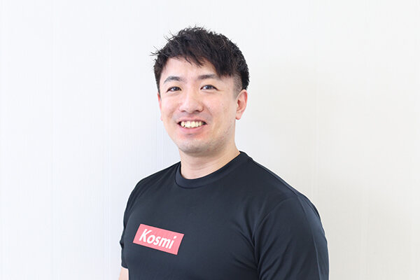
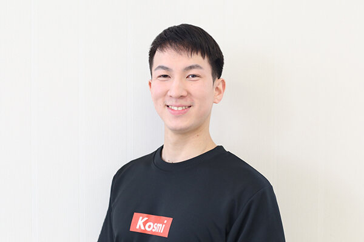
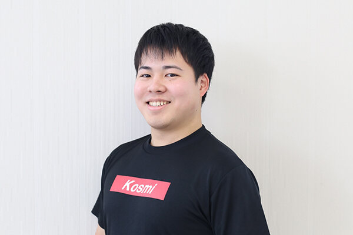
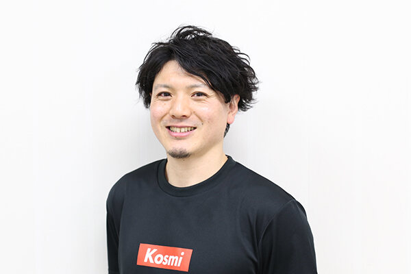

01 五十嵐 勇太Yuta Ikarashi出身地新潟県新潟市資格Core Power Yoga CPY®︎トレーナー経歴2018年～2021年 Re:Birth Fitness Yoga Studio2022年 メディカルフィットネスKOSMI入職
02 安藤 凜人Rinto Ando出身地福島県福島市資格健康運動指導士Core Power Yoga CPY®︎トレーナー経歴2023年 新潟医療福祉大学 健康科学部 健康スポーツ学科 卒業2023年 メディカルフィットネスKOSMI 入職
03 小柳 碧唯Aoi Koyanagi出身地新潟県新潟市資格健康運動指導士健康運動実践指導者Core Power Yoga CPY®トレーナー経歴2023年 新潟医療福祉大学 健康科学部 健康スポーツ学科 卒業2023年 メディカルフィットネスKOSMI 入職
04 山崎 圭Kei Yamazaki出身地新潟県新潟市資格全米スポーツ医学協会パフォーマンス向上スペシャリスト栄養コンシェルジュ2つ星健康運動指導士経歴2011年 新潟大学大学院修了2011年～2014年 新潟県健康づくり・スポーツ医科学センター2015年～2019年 メディカルフィットネスKOSMI2019年～2020年 新潟明訓高校2020年～ K-MAX GYM